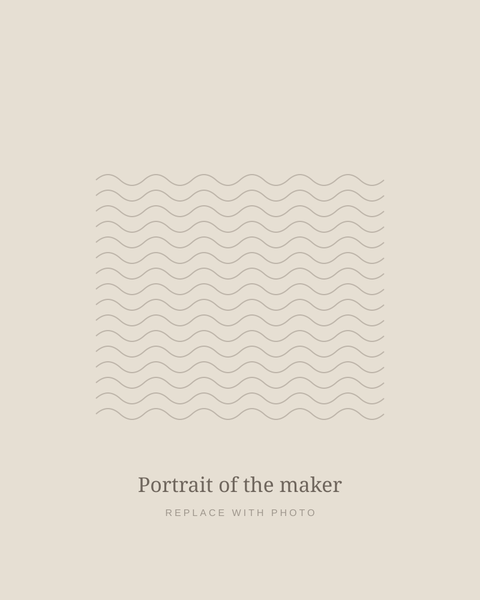

A teacher's patience, in every stitch.
For thirty years, taught in the classroom — helping young people find their words, finish what they started, and take pride in careful work.
Crochet and knitting were always there, in the evenings and on weekends. In retirement, that quiet practice became : a small atelier making a few beautiful, lasting pieces at a time.
“I taught my students that anything worth doing is worth doing slowly and well. That's how I make every piece.” —
- 30 years as a classroom teacher
- Master's degree in English and Education
- Lifelong crocheter and knitter
- Every piece designed, made and finished by hand
When you buy from , you are not buying from a factory. You are buying from one person, who chose the yarn, worked every row and checked every seam before it was wrapped for you.
That is why the collection is small. We would rather make six pieces well than sixty pieces quickly.
From skein to heirloom
Choose
Natural fibers — cotton, merino, alpaca, silk — chosen for softness and long life.
Design
Classic stitches and proportions, tested and adjusted until they drape just right.
Make
Every row by hand. A wrap may take forty hours; a cardigan, sixty.
Finish
Blocked, inspected and wrapped by hand, with a care card for years of wear.
Made to last
Pieces designed to be worn for years and passed on — the opposite of fast fashion.
Honest & personal
Questions are answered personally by the maker. Made-to-order requests are always welcome.
Giving back
of every order supports a different nonprofit each month, including veteran organizations.
Find a piece to keep.
Browse the current collection, or write to us about a custom piece.
View the collection